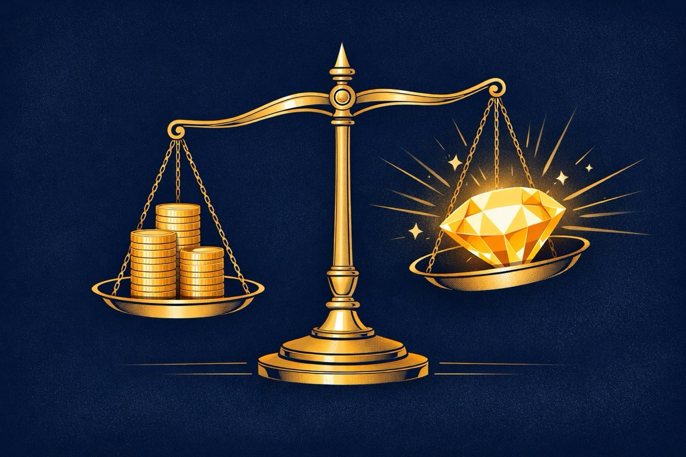

値上げ2566品目時代、選ばれる値上げの条件
2026年7月、食品だけで2,566品目が値上げされました。しかし顧客に選ばれ続ける値上げと、顧客が離れる値上げがあります。分かれ目はコストの説明ではなく、価値の証明です。
原価上昇を理由に「お願い」として値上げを説明している
顧客の困りごとの解決を根拠に、価値の提示として値決めできている
何が起きたか
帝国データバンクの調査によると、2026年7月、食品主要195社による値上げは2,566品目にのぼり、1回あたりの平均値上げ率は11%となりました。中東情勢の悪化による原油・ナフサ価格の上昇が、原材料だけでなくトレーやフィルムなどの資材コストまで押し上げたことが主因です。6月・7月の合計では3,347品目。値上げはもはや例外ではなく、経営の前提条件になりました。
顧客は誰で、何に困っているか
値上げする食品メーカーにとって、顧客は小売のバイヤーであり、その先にいる消費者です。消費者はすでに「値上げ疲れ」の状態にあり、価格だけを理由に棚の中で商品を乗り換えるハードルは下がり続けています。つまりいま顧客が困っているのは「高くなること」そのものではなく、「高くなった理由に納得できないまま、その商品を選び続ける理由を失うこと」です。
付加価値の構造──コスト転嫁と価値転嫁
同じ11%の値上げでも、中身は二つに分かれます。一つは「原価が上がったので上げます」というコスト転嫁。もう一つは「あなたの困りごとをここまで解決しているから、この価格です」という価値転嫁です。コスト転嫁は自社の事情の説明であり、顧客の価値には何も足していません。一方、価値転嫁ができる企業は、値上げの局面を「自社が顧客のどんな困りごとに値段をつけているのか」を語り直す機会に変えています。機能(何ができるか)を便益(顧客に何が起きるか)へ、便益を価値(顧客がお金を払う理由)へ変換して初めて、価格は根拠を持ちます。
値決めへの接続
値決めは経営そのものです。コストの積み上げで価格を決める企業は、コストが下がった瞬間に値下げ圧力に飲み込まれます。顧客価値を基準に価格を決める企業だけが、原価が落ち着いた後も価格を維持できます。今回の値上げラッシュで問われているのは、実は「いくら上げるか」ではなく「何を根拠に上げるか」。その根拠を持つ企業と持たない企業の差は、コストが落ち着いた1年後の利益率に現れると考えられます。
今日の問い
あなたの会社の価格は、コストの積み上げでしょうか。それとも、顧客の困りごとの解決に対する対価でしょうか。次の値上げを「お願い」ではなく「価値の提示」にできるかどうかが、付加価値経営の分かれ目です。